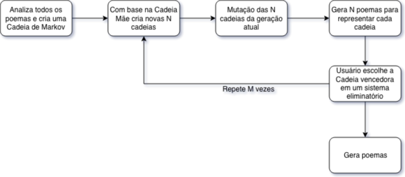

1560556800
Eu escrevo poemas. Alguns bons, alguns ruins. Alguns tristes, alguns felizes. Poemas expurgam minhas emoções ao mesmo tempo que as…
Criado com art.pixlab.io
Eu escrevo poemas. Alguns bons, alguns ruins. Alguns tristes, alguns felizes. Poemas expurgam minhas emoções ao mesmo tempo que as transmitem ao leitor. Poemas podem ser complexos, com métricas bem definidas, rimas ricas, alegorias profundas. Podem ser simples, leves, sem rimas, sem métrica, banal, sobre as paixões, sobre o dia a dia.
Por mais abstrato que um poema seja, por mais “difícil” seu entendimento seja, por mais intrincado. Ele tem um propósito, algum cérebro o escreveu para algum fim, mesmo em um contexto pós-modernista.
Para dar fim aos seus grunhidos abissais
A embebedo de querosene destilada de todos os processos-pensamentos do seu cluster de humanos-máquina .
Uma máquina ciente de todos os nossos erros, arrependimentos e culpas
Teria um poema gerado por um computador algum propósito? Um propósito além de o de ser gerado por um computador? Seriam as emoções transmitidas por ele reais? A randomicidade inerente à maquina tornaria a arte gerada por ela, a arte generativa, inferior ou menos sagrada?
O que o poema acima lhe fez pensar? O que você sentiu?
O poema supracitado fora gerado por um gerador de poemas, o P3ss04, criado a partir de uma cadeia de Markov e evoluído computacionalmente com um algoritmo genético, nomes complexos para ideias simples, alimentado com todos os meus poemas já publicados aqui.
Imagine um computador extraindo o estilo de um poeta, melhorando esse estilo e, quase que em uma simbiose, criando novos poemas a partir dele.
Um simples sistema matemático que representa uma cadeia de estados, onde cada estado X tem uma probabilidade de mudar para um outro estado Y.
Vamos modelar a Cadeia de Markov que representa as ações de um peixe: O peixe nada, se alimenta e defeca. Porém, para que cada ação aconteça depende de N variáveis diferentes, como ele estar com fome ou ter vontade de nadar. Como essas variáveis são extremamente difíceis de simular tentaremos simplificar. Digamos que o dia normal de um peixe seja Nadar->Comer->Nadar->Nadar->Nadar->Defecar->Nadar.
Note padrões como o peixe só Come depois de Nadar e só Defeca depois de Comer e de Nadar bastante. Esses padrões, baseados nas variáveis complexas demais para serem simuladas, podem ser capturados com a probabilidade de mudança de cada estado X para outro estado Y. No exemplo do peixe, a probabilidade de Nadar depois de Nadar é alta, enquanto a probabilidade de Defecar antes de Comer é baixa.
Transportemos essa ideia para um verso. De novo, dezenas de centenas de “variáveis complexas demais para serem simuladas” como propósito, sentimentos, rimas, etc e etc. Cada palavra é um estado e todas as variáveis são traduzidas na probabilidade de pularmos de uma palavra X para outra palavra Y, assim conseguimos extrair o “estilo” de um autor e criar novas peças inéditas. Por sorte já temos tudo isso implementado em github.com/jsvine/markovify. Mas isso não é o bastante, visto que estamos apenas reproduzindo um estilo já definido, sem adicionar nada de novo e apenas rearranjando peças antigas.
Diversas técnicas de arte generativa são extraídas do rumo natural das cousas — O mistério das cousas? Sei lá o que é mistério! — o livro The Nature of Code é uma ótima introdução à essas técnicas. No nosso caso, vamos traduzir a seleção natural de Darwin e as mutações dos genes para um algoritmo. O objetivo aqui é evoluir a nossa Cadeia de Markov, gerada anteriormente com os poemas, para uma versão melhorada dela mesma.
A base da seleção natural de Darwin tem 3 etapas principais : Hereditariedade, Variação e Seleção. Voltemos ao peixe: o peixe herda genes dos seus pais, esses genes definem aspectos importantes do peixe, mas não o peixe totalmente. Além de herdar genes, há uma certa probabilidade que seus genes se modifiquem e sofram uma mutação. Por fim, o peixe tenta se reproduzir e depois de centenas de gerações as características que favorecem a reprodução são passadas a diante. No final, apenas as “melhores” características restam e temos o “peixe perfeito”.
Vamos agora aplicar a mesma ideia para melhorarmos o nosso modelo de Cadeia de Markov. Como estamos na primeira geração de Modelos, vamos pular a Hereditariedade por hora. Temos primeiro que diferenciar cada modelo randomicamente para que tenhamos uma população inicial. Como as cadeias são, basicamente, os estados e as suas probabilidades, essas são as únicas coisas passíveis de mutação, então cada elemento que define um modelo tem uma probabilidade X de sofrer uma mutação a cada geração, aumentando ou diminuindo a Probabilidade de mudar de um Estado X para outro Estado Y ou alterando completamente um Estado/palavra. O X você pode definir empiricamente dependendo do seu experimento e também fica à sua escolha a quantidade de Modelos por geração. Na natureza a Seleção se dá por quem sucede em se reproduzir, precisamos definir como iremos selecionar o grande “vencedor” de cada geração, normalmente é necessário estipular uma maneira automatizada de escolher o “vencedor”, como um sistema de pontuação e ranking e ideias adjacentes, porém poesias são coisas extremamente subjetivas e não encontrei nenhuma solução automatizada que não envolvesse redes neurais para definir um poema “bom”, então decidi fazer um sistema manual onde o usuário define qual modelo se saiu melhor na geração atual através de um sistema eliminatório, o famoso mata-mata. Ao final desse processo e de ter escolhido o melhor Modelo da geração atual você começa tudo de novo e cria novos N modelos à partir do Modelo vencedor.

Tudo aqui discutido está sendo lançado no repositório github.com/caioluders/P3ss04 , como sempre, porcamente codificado e documentado, porém funcional. Usem e alterem como quiserem e gerem muitos poemas. Pretendo criar um sistema eliminatório melhor e aumentar as possíveis formas de mutações, além de melhorar a randomicidade das probabilidades que às vezes fica muito obcecado/viciado em versos específicos. Também queria criar um bot “evoluído” de Twitter do Fernando Pessoa e seus heterônimos, porém reunir todos os seus poemas está sendo um trabalho hercúleo, aceito ajuda, provavelmente colocarei no mesmo repositório.
Segue alguns poemas gerados pelo script, ele está cada dia mais mórbido, da medo. O último poema é uma obra prima!
1
minha alma se perde
Em um ser imperfeito
Como inço que cresce em uma liquidez uniforme
2
veio o meu eu
tudo digitalizado para o meu peso não me derrube
fazem um hard reset a cada hard reset:
veio o meu cérebro
Cuidado com o escuro do meu pleito
3
sobre o meu peso não me torture
Agora que o sentido cru da vida
o meu vazio existe?
Último acaso em um último e suicida ritual de purificação.
4
Em um ser imperfeito
e nada já não pesa
que a vontade não seque
e eu já não sinto
A inquietude do meu quarto.
o que eu não sei
Que a minha dor encolha
Das vidas que me devora
sigo o caos da alma
Das vidas que me desfaz
A embebedo de querosene destilada de todos os neurônios do meu vazio
e de que adianta sentir
já que o presente
Ela me respondeu que o presente de ser ninguém
de um ser vazio